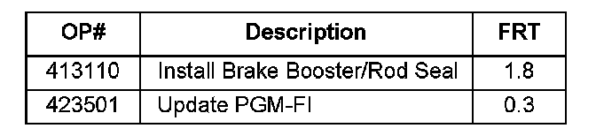
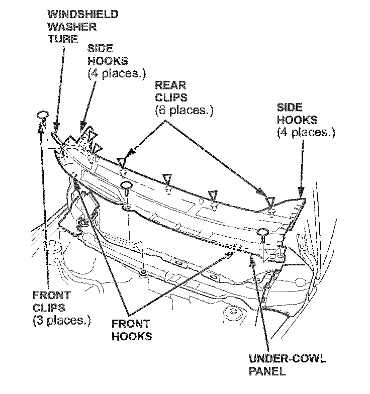
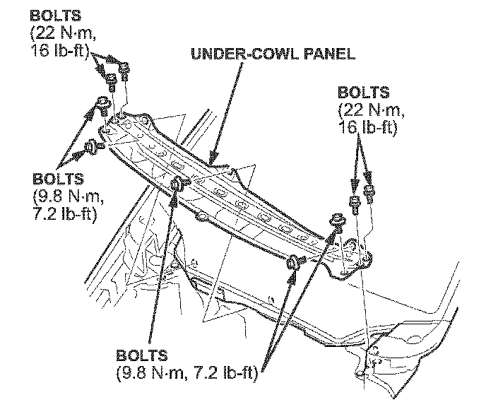
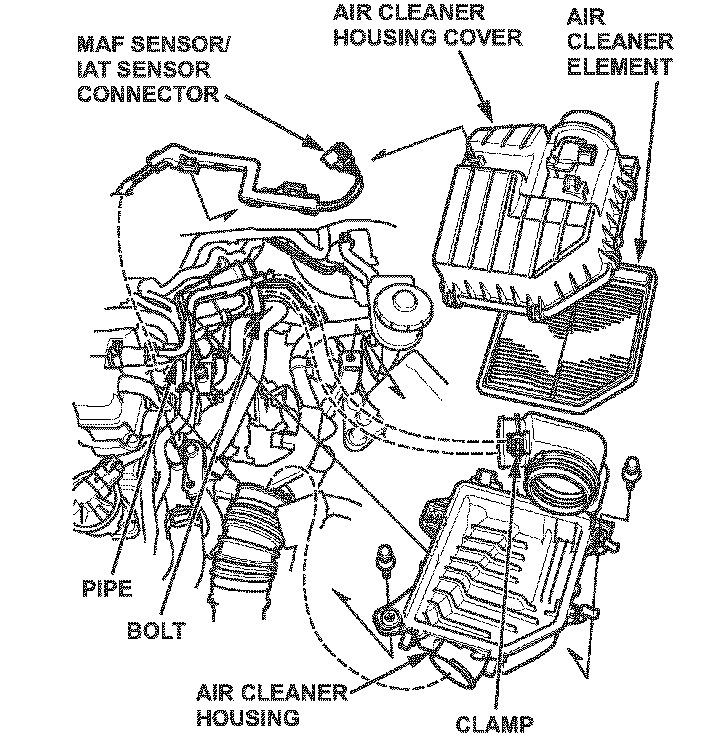
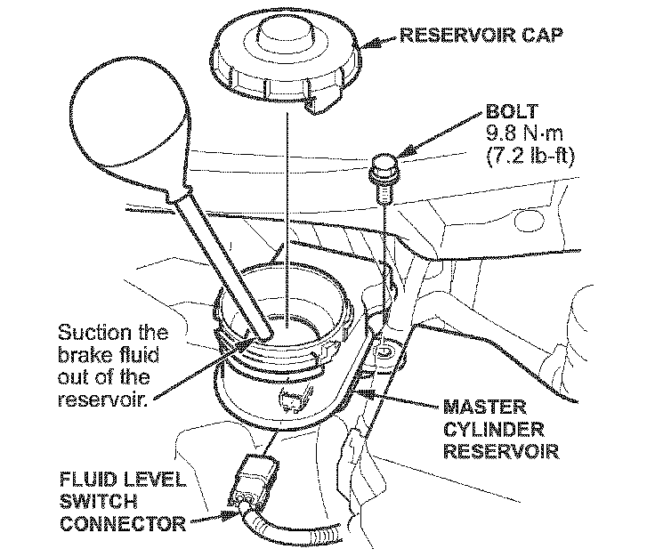
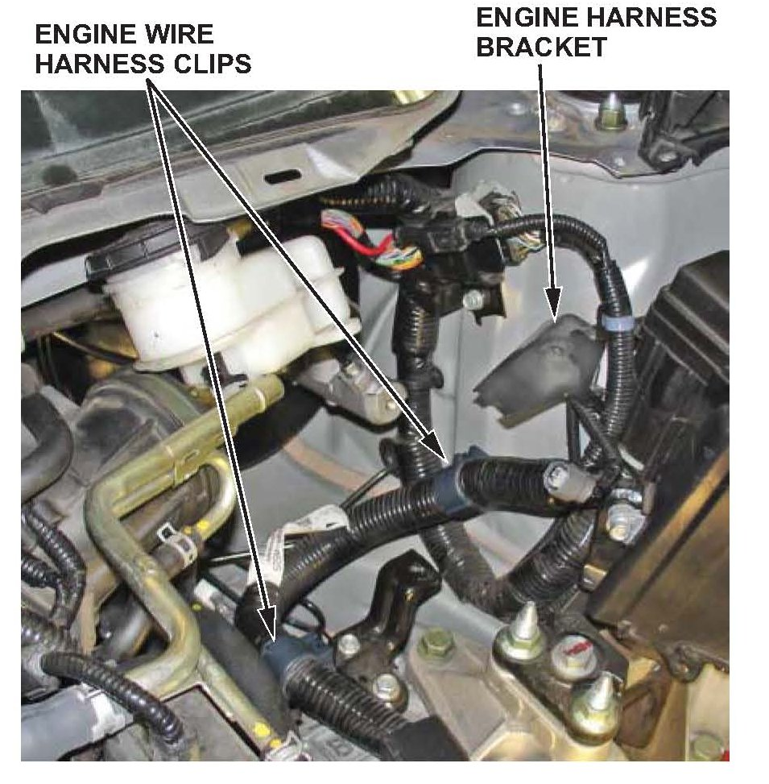
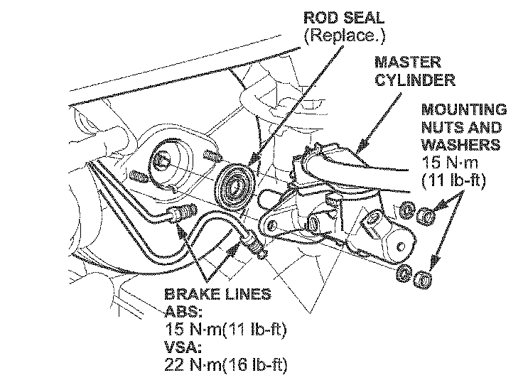
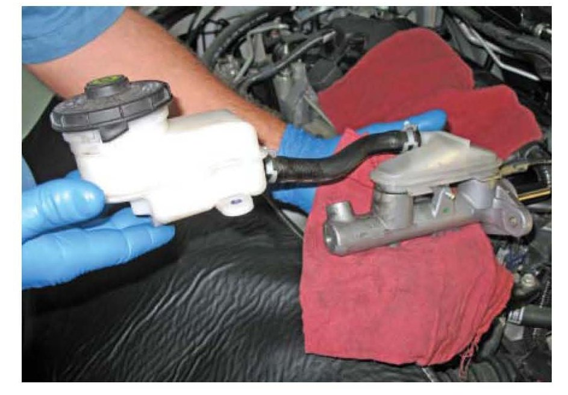
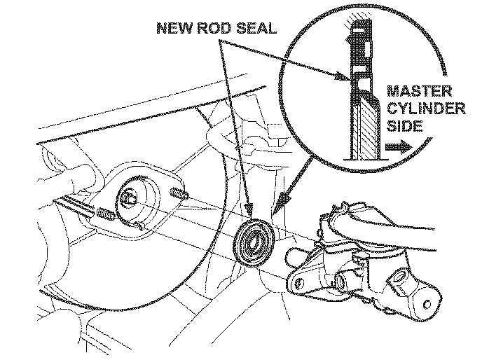

Brakes - Hard Pedal Feel When Cold
07-077November 16, 2007
Applies To:
2006-07 Civic With Automatic Transmission - ALL
Brake Pedal Feels Hard in the Mornings or in Cold Weather
SYMPTOM
The brake pedal can feel hard during the first couple of brake applications, usually in the morning when the ambient temperature is cold.
PROBABLE CAUSE
At cold start, in high altitude, combined with the fast idle retard operation, the intake manifold vacuum supply is at its lowest, resulting in low booster assist.
CORRECTIVE ACTION
Replace the brake booster and the master cylinder rod seal, and update the PGM-FI software using the HDS.
PARTS INFORMATION
Brake Booster:
P/N 01469-SNB-G00, H/C 8745390
Rod Seal:
P/N 46185-SE0-003, H/C 2120970
SOFTWARE INFORMATION
HDS Software Version 2.011.010 (or later)
WARRANTY CLAIM INFORMATION

In warranty:
The normal warranty applies.
Failed Part: P/N 01469-SNA-A00
H/C 8044729
Defect Code: 03214
Symptom Code: 03223
Template ID: 07-077A
Skill Level: Repair Technician
Out of warranty:
Any repair performed after warranty expiration may be eligible for goodwill consideration by the District Parts and Service Manager or your Zone Office. You must request consideration, and get a decision, before starting work.
REPAIR PROCEDURE
1. Position the wiper blades in an upright position to keep from interfering with the cowl cover.
2. Remove the center cowl cover:
^ Remove the three clips.
^ Release the three front hooks from the edge of the under-cowl panel.

^ Detach the clips by carefully pulling the cover up, then remove the cover by releasing the side hooks.

3. Remove the under-cowl panel.

4. Remove the top half of the air cleaner housing and the air cleaner element to gain access to the clamp.
5. Loosen all of the clamps attached to the air cleaner housing, and remove the bottom half of the housing.

6. Disconnect the brake fluid level switch connector.
7. Remove the master cylinder reservoir mounting bolt.
8. Remove the brake fluid from the master cylinder reservoir with a syringe.

9. Remove the two engine wire harness clips from their brackets.
10. Remove the smaller engine harness bracket located underneath the master cylinder reservoir bracket (one 6 mm bolt).

11. Disconnect the brake lines from the master cylinder.
NOTE:
To prevent spills, cover the hose joints with shop towels.
12. Remove the master cylinder mounting nuts and washers.

13. Remove the master cylinder and reservoir together from the brake booster.
NOTE:
Be careful to not bend or damage the brake lines when removing the master cylinder.
14. Remove the brake booster:
^ Refer to page 19-27 of the 2OO~2OO8 Civic Service Manual, or
^ Online, enter keyword BOOSTER, and select Brake Booster Replacement (RI 8A1 and RI 8A4 Engine) from the list.
15. Install the new brake booster in the reverse order of removal.

16. Install a new rod seal on the master cylinder.
17. Install the master cylinder and reservoir on the brake booster in the reverse order of removal.
18. Check the brake pedal height and free play after installing the master cylinder, and adjust it if needed:
^ Refer to page 19-6 of the service manual, or
^ Online, enter keywords PEDAL ADJUSTMENT, and select Brake Pedal and Brake Pedal Position Switch Adjustment (A/T) from the list.
19. Fill the reservoir with brake fluid, and bleed the brake system.
20. Install all removed parts.
21. Update the PGM-FI software with the HDS. Refer to Service Bulletin 01-023, Updating Control Units/ Modules.

Disclaimer